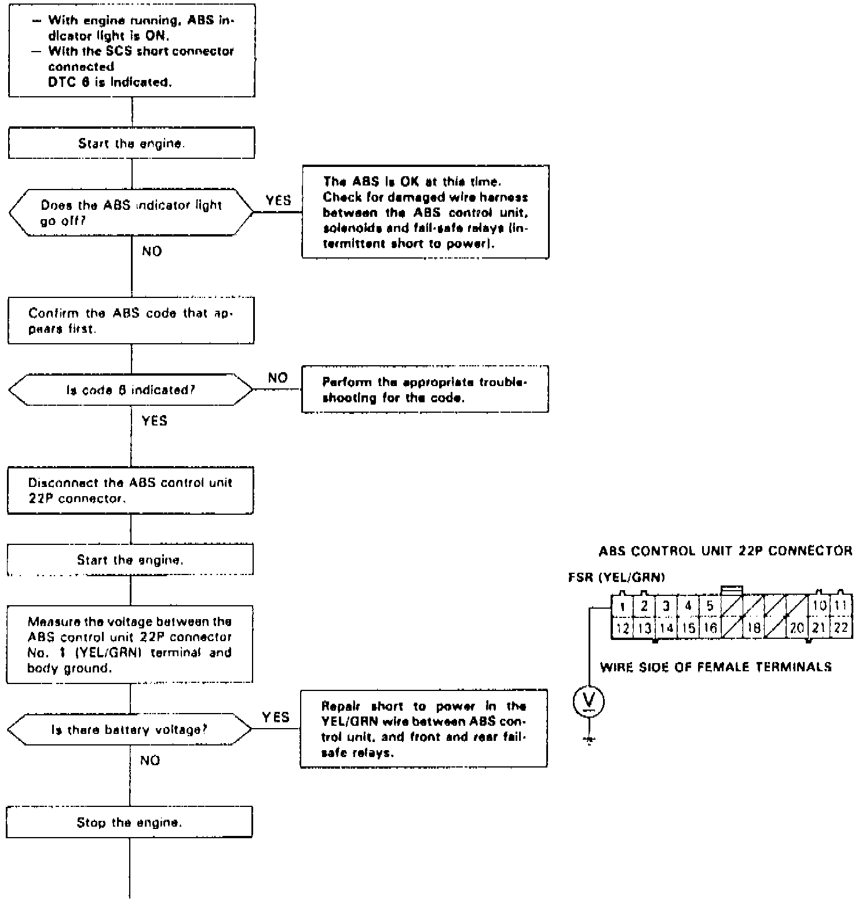
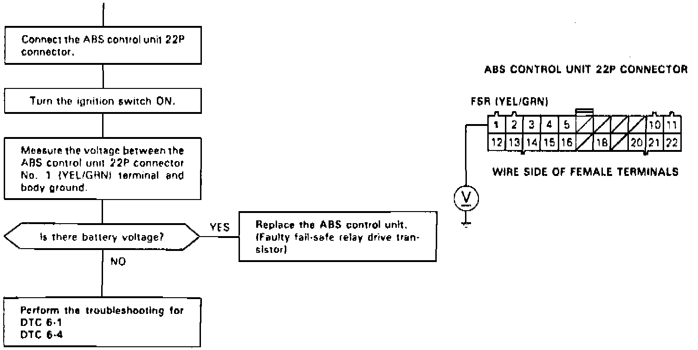

DTC 6
Fig. 38 Code 6: Front & Rear Fail-Safe Relays Diagnosis (Part 1 Of 2):

Fig. 38 Code 6: Front & Rear Fail-Safe Relays Diagnosis (Part 2 Of 2):

Diagnostic Trouble Code (DTC) 6: Front and Rear Fail-safe Relays Diagnosis
The ABS control unit monitors the voltage from the battery for the six solenoids during the initial diagnosis when the fail-safe relays are OFF.
The ABS control unit keeps the ABS indicator light on if it detects battery voltage at the front and rear solenoid circuits.
Possible causes:
- Short to power in the relay drive circuits between the fail-safe relays and ABS control unit
- Faulty relay drive transistor (ON) in the ABS control unit